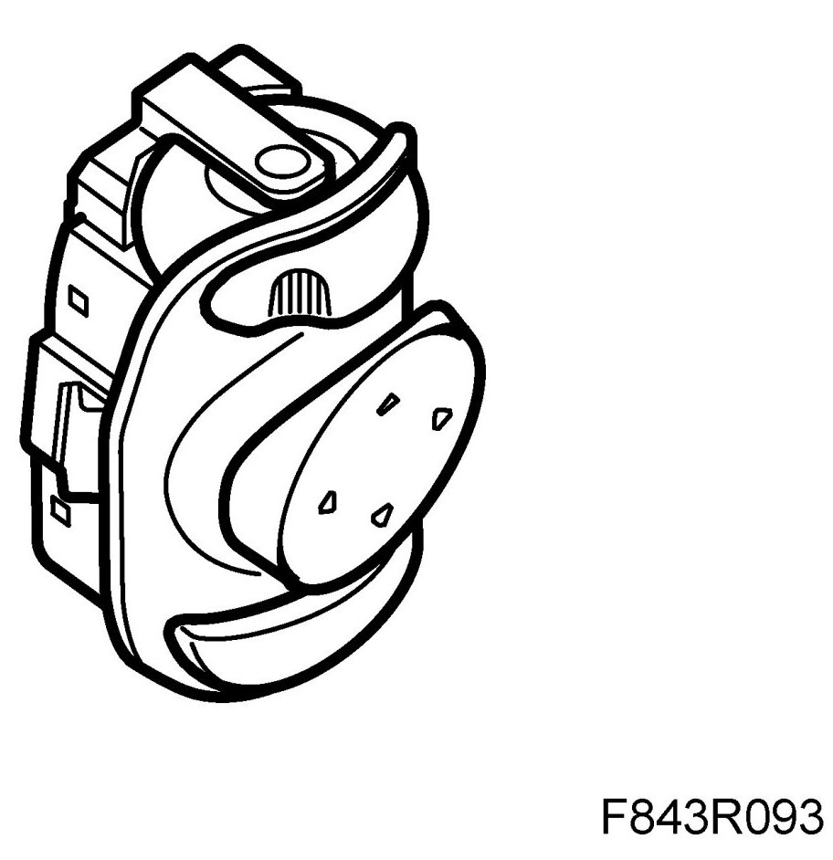
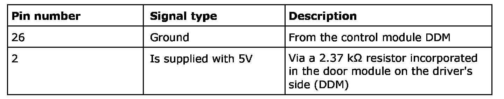
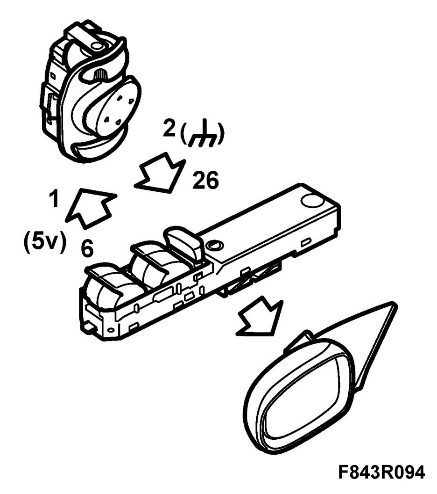
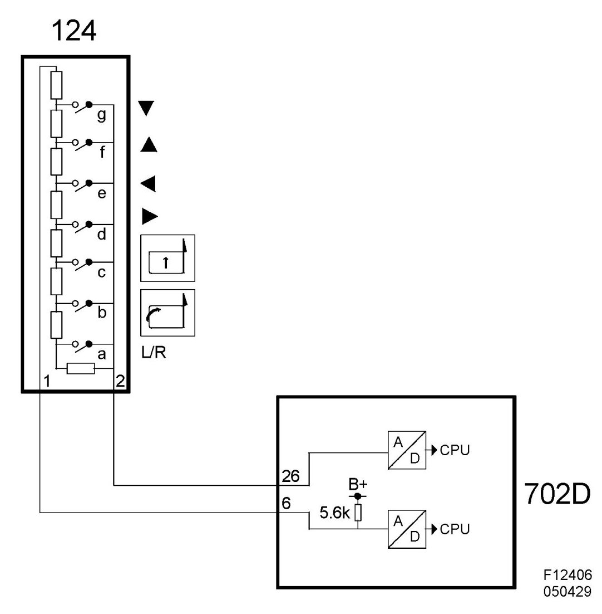

Power Mirror Switch: Description and Operation
Switches, Electrically Adjustable Door Mirrors (124)
Location
Switch, electrically adjustable door mirror (124)

Main purpose
Is used to adjust the door mirrors on both sides.
Type
The keypad has the following functions:
- Choice of mirror driver/passenger
- Movement left/right/up/down
- Downward tilting of the passenger mirror when reversing. (mirror with memory only)
- Retract/Extend mirrors (optional)
The keypad has 2 connector pins and contains 8 resistors connected in series, of which 1 is a diagnostic resistor. For each button that is depressed, one or more resistors are bypassed. When no button is depressed all of the resistors are connected in series.
Connection

The voltage measured between the pins will depend on which button is depressed. The voltage value is A/D converted and is then available in digital form. The digital voltage value is then converted to an identity for the relevant button and is placed in the control module working memory. The value is transmitted on the bus and is also used by PDM. The diagnostic resistor completes the circuit, even though no button is depressed, and therefore the voltage will never be exactly 5V during normal operation. The purpose of this is to enable the generation of a diagnostic trouble code in the event of a circuit failure.

